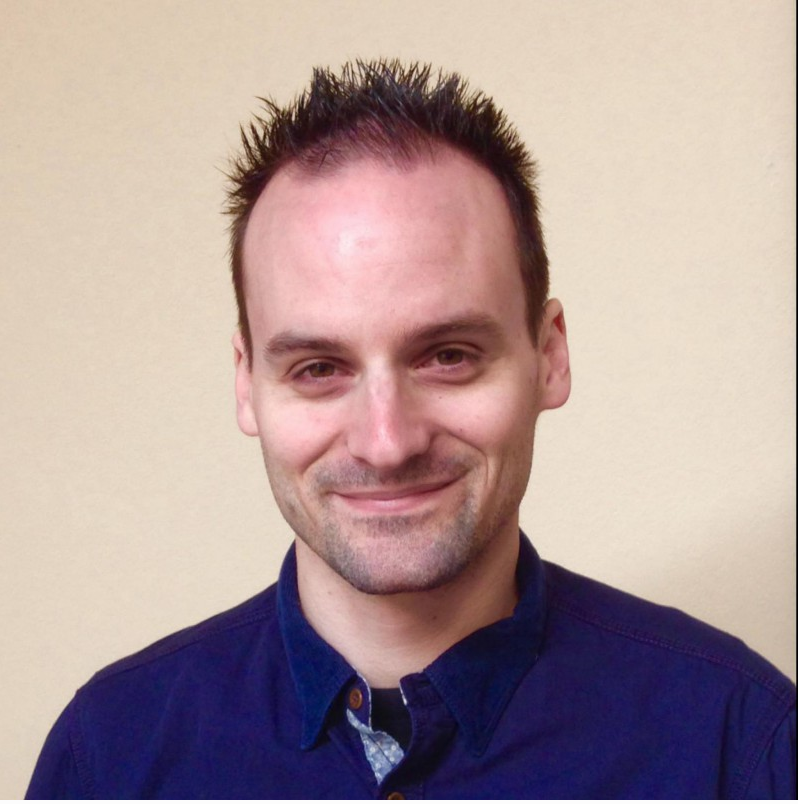

James Bomotti
I was born and raised in Marin County, CA. I played soccer, baseball, and basketball, was a cub/boy scout, but nothing really caught my attention on quite the same level as the day I first saw a friend playing Mario Bros. on NES. Thus began my love for video games that led me down the road to computers, and eventually all things Japanese (food, culture, language). I applied to Cal Poly's highly impacted CS department amid the dot-com madness but (now what I consider luckily) wasn't accepted.
Still holding onto some hope of making it into the program, I attended Cuesta College down in San Luis Obispo. After a year, I realized this wasn't what I wanted to be doing, so I moved back to the Bay Area to try and reboot. What was going to be a short period of working, saving some money, and finding what I really wanted to do, turned into 8+ years working for REI, year long stints working for a wealth management firm and bartending, followed by another 8+ years working in my current position for the Marin County Public Defender's Office. During my time at REI I started taking some Japanese courses and even managed to use the vacation time I had accrued to spend a month roaming around Japan, soaking up the culture and honing my language skills. The travel bug stuck with me and the rest of my time working was mostly spent towards the goal of saving money and vacation time for my next trip. I am incredibly grateful for all that I learned during my time working at these places, as well as the myriad of amazing people I can now call my friends. That being said, none of this really ever clicked as "this is what I want to do."
Enter DBC. I heard about "coding bootcamps" through one of my girlfriend's coworkers. I immediately started looking into them as the idea both fascinated and excited me. I was also getting to the point where it was time for me to move on from my current position and an additional set of skills would certainly help with that. About a week later I was told that the bootcamp the aforementioned coworker had attended was called Dev Bootcamp. I checked my short list of places I was considering applying to and there it was. I'm not huge on signs, but I decided to take it as one and applied that night.
This part will have to be continually updated but I am currently working my way through Phase 0 of DBC. I haven't felt this challenged in quite some time and I absolutely love it! I still struggle from time to time with a case of imposter syndrome, but I hope to get that out of the way by the time I start onsite in the end of July!
I absolutely love my girlfriend without whose love, support, and encouragement, this wouldn't be possible. I love our (ok, technically her) little beagle Toby whose love for food is a never ending source of entertainment and frustration. If I had to (could) survive on candy and donuts, I would be a very happy person. I didn't get my driver's license until I was 28 years old. I just walked, took the bus, or got rides with people. That's about it for now. This, like the DBC section, will likely be subject to numerous updates.
{kind=link}